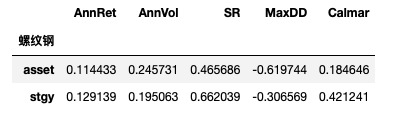

- 00 开篇词 为什么说程序员最适合学财富管理？.md.html
- 01 财富框架：建立属于你自己的财富双塔.md.html
- 02 个人发展：你自己的发展才是最大的财富源泉.md.html
- 03 理财金字塔：如何建立稳固的投资理财结构？.md.html
- 04 实战知识：有哪些收益稳健的经典资产配置组合？.md.html
- 05 支点投资法：主动投资是讲逻辑的！.md.html
- 06 不当韭菜：在财富管理的过程中摆正心态，知己知彼.md.html
- 07 职业方向：如何选择一个有前景的职业方向？.md.html
- 08 职业规划：大公司VS小公司，怎样选择更有前途？.md.html
- 09 期权股权：如何正确处理公司的期权、股权？.md.html
- 10 跳槽涨薪：如何规划一条合理的职业道路？.md.html
- 11 财富拓展：35岁失业？程序员如何拓宽财富渠道？.md.html
- 12 房产投资：如何做出理性的买房决策？.md.html
- 13 实战知识：让我们编程计算下怎么还房贷最合适.md.html
- 14 基金投资：如何让专业人士帮你赚钱？.md.html
- 15 实战知识：如何选出一只优质的基金？.md.html
- 16 股票投资：最适合散户的股票投资方法是什么？.md.html
- 17 投资闭环：如何成为越来越专业的投资者？.md.html
- 18 技术优势：程序员如何用技术超越其他投资者？.md.html
- 19 量化投资：典型的量化投资系统都包含哪些模块？.md.html
- 20 价值投资：永远不过时的中长期投资策略.md.html
- 21 趋势跟踪：怎样跟着趋势一起赚钱？.md.html
- 22 轮动策略：如何踩准市场变换的节奏？.md.html
- 23 对冲思想：这个世界上有稳赚不赔的生意吗？.md.html
- 24 多因子模型：整合不同策略，形成合力的顶层框架.md.html
- 25 机器学习：我们能用机器学习来建立投资模型吗？.md.html
- 26 量化实战：从0到1搭建起一套简单的量化投资系统（上）.md.html
- 27 量化实战：从0到1搭建起一套简单的量化投资系统（下）.md.html
- 番外一 王喆对话李腾：程序员对基金经理的灵魂十问（上）.md.html
- 番外三 有哪些能够持续学习的参考资料和相关网站？.md.html
- 番外二 王喆对话李腾：程序员对基金经理的灵魂十问（下）.md.html
- 番外四 知识总结：这门课的全部思维导图.md.html
- 答疑课堂（一） 财富框架篇、个人发展篇思考题集锦.md.html
- 答疑课堂（二） 投资实战篇、投资进阶篇思考题集锦.md.html
- 结束语 知行合一：财富管理是一生的事情.md.html
- 捐赠
21 趋势跟踪：怎样跟着趋势一起赚钱？
你好，我是李腾，今天我来讲一讲趋势跟踪策略。
上一讲，王喆老师讲解了价值投资过程中的要点，它更关注的是标的本身价值和价格的差异，并利用这种差异来盈利。而今天我要讲的趋势跟踪，可以说是从另一个角度来考虑投资问题的。它更关注的是资产价格的走势，以及如何搭上走势的顺风车来赚钱。
听到这里，你应该感觉很熟悉，说不定还想问一句：涨了买入，跌了卖出，这不是谁都会吗？
是的，就算不知道这个名词，大部分投资者也应该用过这种投资方法。但我在这里要问你几个问题了：趋势的开始和终结有哪些明显的信号？什么样的趋势跟踪方法是更适合个人投资者的？这些具体执行时的细节问题，往往是投资能否成功的关键。那么今天，我们就一起来看下趋势跟踪策略的底层逻辑，以及具体的实现方法。
什么是趋势跟踪策略？
用最通俗的话来解释，趋势跟踪策略就是“追涨杀跌”：当一个资产的价格近期上涨的时候，我们就做多这个品种；当一个资产近期价格下跌的时候，我们就做空这个品种。
这里解释下“做多”和“做空”两个概念。“做多”很好理解，指的是投资者判断投资标的有上涨趋势后，直接买入当前的资产，持有资产等待上涨，然后卖出获利。“做空”，指的是投资者判断投资标的有下跌趋势，先借入标的资产，打个借条，然后用当前价格卖出。等未来投资标的价格下跌后，再用那时的价格买入标的资产，把借条销掉。你可以看到，做多和做空是一对相反的操作模式，一个先买再卖，一个先卖再买，分别通过资产的上涨和下跌来获利。
在进行趋势跟踪操作时，我们直接关心的不是这个资产的真实价值，而是它的价格趋势，我们要赚的就是这波趋势的钱。理想情况下，在这波趋势结束时，甚至结束前，我们就应该终止这次趋势操作。
在支点投资法中，趋势的出现与结束就是支点设立与消失的信号。你可以回顾下 17讲 里投资蔚来汽车的例子，那就是一个典型的利用趋势跟踪策略进行投资的案例。
为什么趋势跟踪策略会有效？
趋势跟踪看起来很简单，但却是一种重要而有效的投资策略。无论对于专业投资团队，还是散户投资者来说，它都是不可不深入研究的投资方法。
那么，为什么趋势跟踪策略能让我们赚到钱呢？这个策略的底层逻辑是什么呢？简单来说，支撑趋势跟踪策略的底层逻辑有三个，分别是信息的传播过程，经济或产业周期的存在，以及投资者情绪的推动。
先来看信息传播过程。影响一种资产价格的新信息产生之后，它的传播是需要一个过程的，有的是几分钟，有的是几小时到几天。像比特币这种全新的投资机会，当初甚至花了几年的时间才被大部分投资者注意到。
正因为信息的传播不是瞬间的，是有一个过程的，所以资产价格就会在信息传播的整个过程中出现一个单边上涨（利好消息逐步扩散）或单边下跌（利空消息逐步扩散）的趋势。
当然，这个单边的走势还会受其他小级别信息的冲击，会产生一些震荡，但趋势一旦形成，是带有持续性的动量的，我们要做的就是利用这股趋势的动量来搭上盈利的“顺风车”。你可能听过这样一种说法：“如果地铁上的大部分乘客，甚至跳广场舞的大爷大妈都在谈论股票，那就到了清仓的时候了。”这就是因为大爷大妈的信息获取能力其实是很弱的，如果他们都得到了这个信息，那就意味着这波信息传播过程就要结束了，也意味着这波趋势的动量已经不足，这时就要密切注意趋势结束的信号。
第二个逻辑是经济或产业的固有周期。投资标的所处的行业大多具有一定的周期性，这种周期结构一般是由供需力量的强弱交替变化导致的，在经济上具有一定的惯性。
就拿我们经常听说的房地产周期举例子吧，一般来说，房价会有一个几年的上升期，然后再有几年的下降期。再比如说猪肉的价格周期，还记得2019年猪肉价格连续10个月上涨，从10元/公斤涨到36元/公斤，而今年猪肉价格又连续5个月下跌，从36元/公斤下跌到16元/公斤。周期性意味着这些投资标的存在中长线的上涨和下降趋势，我们就可以借用这些趋势来获利。
第三个逻辑是投资者情绪的推动。投资者的恐惧和兴奋情绪往往会加剧趋势的波动幅度，理性投资者就可以利用其他投资者的过激反应来借势盈利。当然，在这个过程中你要时刻保持清醒，从标的的上涨幅度走势、交易量走势中去验证其他投资者的情绪是否高涨，一旦发现减弱的趋势，就应该及早结束这次投资。
上面就是趋势产生的三个内在逻辑。明白了支撑趋势跟踪策略的底层逻辑，我们就可以分析这个投资者最关心的问题了：如何判断趋势产生和结束的时间节点？接下来，我就介绍几种和趋势相关的常见技术指标。
常见的趋势指标有哪些？
我们在事后看某个投资标的的趋势线时，都能很直观地看出哪一段时间是上升趋势，哪一段是下跌趋势。例如下面这张表示沪深300指数价格走势的图片里，上涨和下跌的趋势都很明显。
但是在实际的投资过程中，我们需要在事前就发现趋势的出现和结束信号，而且这些信号最好是可量化的，不需要人工的观察。接下来，我就列出几个常用的趋势相关指标。
趋势指标1：近期涨幅
最简单的趋势指标，就是该投资标的近一段时间的涨跌幅。例如，追踪一个投资目标，看它最近一个月的涨跌情况，如果上涨超过5%就做多，如果下跌超过5%就做空，否则就空仓。这是最简单的趋势指标，但强烈依赖于回测系统来确定具体的参数。而且由于过于简单，有一定的失效风险。
趋势指标2：双均线系统
双均线系统是另一种常见的趋势指标，它指的是利用两个不同周期的价格均线之间的关系，来确定趋势的走势。短均线高于长均线，我们就认为进入上涨趋势，反之就认为进入下跌趋势。
常用的均线包括5日均线、10日均线、20日均线、60日均线等。双均线系统一般会使用其中的两条均线，一条短均线，一条长均线。举个例子，用10日均线作为短均线，用60日均线作为长均线，然后每天观察短均线是在长均线的上方，还是下方。如果短均线在长均线上方，就说明趋势仍然在上涨过程中，就发出做多信号，否则就发出做空信号。
趋势指标3：布林带
第三个常用的趋势指标叫“布林带”，它是一个经典的交易通道突破类指标。布林带的计算要稍微复杂一些，下面我来详细讲解下。
首先，我们根据投资标的最近20个交易日收盘价的均值和标准差，确定价格的上轨和下轨。具体来讲，上轨是均价加上两倍标准差，下轨则是均价减去两倍标准差，上下轨之间的价格区域就被称为价格通道。然后观察价格的变化，当最新价格在上下轨之间变动时，认为是正常波动，当价格突破上下轨时，认为趋势出现。
举个例子，图3中展示了布林带在2015年股灾发生前后的实际效果。图中，assset就是标的资产沪深300的价格曲线，MA是均线，up和down分别是按刚才说的方式计算的上下轨。图中，我们用红色箭头标出了布林带发出看涨（向上箭头）和看跌（向下箭头）信号的位置。结合发出信号后的实际走势可以看出，基于布林带的趋势预测在这一段时间的准确率还是非常高的。
在具体操作中，当价格曲线上穿上轨的时候，说明上涨趋势建立，需要做多；当价格曲线下穿下轨的时候，说明下跌趋势建立，可以做空；当最新价格重新回到20日均线时，说明上涨或者下跌的趋势结束，这时候平仓。
到这里，我们就掌握了三个判断趋势的工具，那它们到底好不好用呢？接下来，我们就用一些回测试验来验证一下。
常见趋势指标的回测效果
首先要说的是，对你依赖的交易信号进行历史回测是投资中最重要的环节，没有之一。历史回测相当于对一种投资想法进行高强度的验证。通过分析回测结果，我们就可以在使用这些交易信号进行实盘投资之前，对它们各自的投资效果和细微差异有客观的了解，达到“去伪存真”的目的。
在做回测时，最重要的注意事项就是要避免引入未来数据。换句话说，就是在每一个历史时点上生成当时的交易信号时，一定要屏蔽掉那个时点之后的数据。因为一旦引入了未来数据，你的回测效果就会异常的好，但这种利用了未来数据的交易信号在实盘交易中是不可用的，因为用到的“未来数据”在计算时点还没获得。
下面，我就给出前面介绍的三种趋势指标的回测结果。
近期涨幅的回测结果
在近期涨幅指标中，我们选取的参数是：回看天数N=20，根据回看期上的涨幅决定交易方向，看多阈值long_threshold=0.05，看空阈值short_threshold=-0.05。选取参数后，在我们最熟悉的沪深300指数上进行回测。因为普通投资者不太容易做空沪深300指数，所以回测中我们决定仓位的规则是：当指标看多时满仓，当指标看空时空仓，其他时间半仓。
在图4中，asset代表投资标的（蓝色线），stgy代表趋势策略（橙色线），pos代表仓位；AnnRet表示年化收益，AnnVol表示年化波动率，SR表示夏普率，MaxDD表示最大回撤，Calmar表示年化收益与最大回撤的比值。
你可以看到，用简单的近20个交易日涨幅来做趋势策略，就能显著改善对沪深300的投资效果：长期年化收益升高了约2%，而波动率从26%降到16%，最大回撤从72%降到37%。
看细节的话，使用趋势跟踪策略最大的好处在于避开了2008年和2015年下半年这两次A股历史上最大的暴跌，但在2019和2020两年牛市上的效果是比保持满仓沪深300弱的，这也是为了避开暴跌必然要付出的代价。同时，你可以从橙色的仓位变动图看出，仓位调整是相对频繁的，平均每个月都要调整一到两次，在执行过程中会比较占用个人时间，这是另一个代价。
双均线系统的回测结果
我们再看一下基于双均线系统的趋势跟踪策略。这里我们选取的参数是：短均线回看天数N1=10，长均线回看天数N2=60，根据短均线与长均线的比值决定交易方向，看多阈值1.05，看空阈值0.95。
选取参数后，我们在沪深300指数上进行回测，决定仓位的规则和上面保持一致：当指标看多时满仓，当指标看空时空仓，其他时间半仓。
从结果可以看出，双均线系统在上述参数设置下的效果要弱于前面的近期涨幅指标。例如，2009年下半年和2015年下半年的回撤只避开了一小部分，但仍然显著改善了对沪深300的长期投资效果。而且它的好处在于，仓位调整的频率比近期涨幅指标要低很多，大致平均每两个月才调整一次，个人投资者可以比较轻松地实施。
布林带的回测结果
最后，我们来看基于布林带的趋势跟踪策略。我们选取的参数是回看天数N=20，同样在沪深300指数上进行回测，决定仓位的规则还是一样的：当指标看多时满仓，当指标看空时空仓，其他时间半仓。
可以看出，基于上面的参数选择，布林带的效果是三个指标中最好的，它的策略净值走势线也最好看。最大回撤被控制到了沪深300的一半以内，而长期年化收益甚至高于沪深300本身，夏普率也接近翻倍，唯一的缺陷是调仓频率还是有点高，平均每个月1次左右。
我把这三个趋势跟踪策略的结果总结在了下面的表格中，你可以更直观地对比它们的优缺点：
不过这里要说明一点，到底哪个指标好也和你选择的参数有关，还是需要你多尝试，根据实际情况作出判断。
我们也可以把上面的趋势指标应用在其他的指数、个股或者期货上，方法是一样的。举个例子，在期货交易中是可以做空的，那就可以进一步利用趋势跟踪策略的优势，从价格的趋势性下跌中赚钱。
接下来，我们就看一下布林带策略在螺纹钢期货上应用的例子。下面两张图片，分别是利用回看20天的布林带和30天的布林带生成的趋势跟踪策略。你可以先观察一下，它们的回测结果有什么不同，这一讲的最后我们还有相应的思考题。

还需要说明的是，今天讲的三种常见的趋势指标只是最简单的例子，可以作为你研究趋势跟踪策略的起点。你可以在这个基础上不断进行改进，从而更准确、更及时地识别出趋势的开始和结束。
例如，在迭代趋势指标的过程中，你还可以考虑频率的变更，以及引入新的信息维度。
变更频率，就是在上述各种趋势指标中，把日频数据改成分钟频率或秒钟频率的数据。比如看最近20分钟的涨幅，来决定下一分钟的仓位，这就是趋势策略的频率变更。对于不同的投资标的，使趋势策略有效的频率是不同的，而且情况也是在动态变化的，所以你需要结合实际情况来变更频率。
引入新的信息维度，指的是除了使用价格数据，还可以使用成交量或者持仓量数据，或者使用跟这个品种有关的其他信息。举个例子，如果你交易的是商品期货，比如螺纹钢期货，那你就可以用螺纹钢的现货价格来配合生成一些识别趋势的信号。如果这些改进能让你对趋势起止的识别更快更准，就能改进你的策略表现。
执行趋势跟踪策略时，有哪些需要注意的地方？
说到这里，我还想和你分享三个关于趋势跟踪策略的要点。这些要点是我长期运用趋势跟踪策略后总结出的经验，希望你能从中有所收获：
第一，典型的趋势跟踪策略的特点是：胜率比较低，但胜利幅度比较大。
通俗地讲，就是“半年不开张，开张吃半年”。比如在交易螺纹钢的策略中，策略会频繁建仓，试图去抓住上涨的趋势。但大多数情况下，这些上涨的趋势都是假象，于是策略基于后续的验证会尽快平仓，产生小幅的亏损。但一旦抓住一次上涨的大趋势，就可以抹平甚至超过之前的总亏损。这样的特点存在于各类投资标的上。
第二，要多通过回测去确定策略的敏感程度。
任何投资标的的价格在不同周期上的趋势都不是“一帆风顺”的，都会有一些中途的震荡。过于敏感的策略，容易被小级别的震荡荡出去，从而错过整体趋势的收益；过于钝化的策略，又容易在策略拐头的时候过晚退出，增大损失。
所以，要开发一个趋势策略，主要难点在于把握识别趋势起止的敏感度。如果想做到既提高敏感度，又降低误判率，那就必须要增加输入信息的维度，提高分类的准确性。由于不同投资标的特点不同，我们只能通过大量的回测和实盘去调整和确定策略敏感程度。
第三，建议个人投资者重点关注中长期趋势跟踪策略。
长线趋势具有长期的生命力和较大的容量，是趋势跟踪策略的主流，而且各行业的经济周期都是中长线的，更容易追踪到周期性的大趋势。相对来说，有大量专业投资团队参与的短线趋势策略赛道比较拥挤，竞争比较激烈，本质上是一种比拼人才、研发能力甚至硬件资源的军备竞赛。所以，我建议个人投资者慎入“高度内卷”的短线趋势策略赛道，重点关注中长期趋势跟踪策略。
小结
今天，我详细介绍了趋势跟踪策略，讲解了支撑它的底层逻辑和具体的实现方法。下面，我再总结下这一讲的要点，供你回顾：
- 对趋势跟踪策略最通俗的解释，就是“追涨杀跌”。
- 支撑趋势跟踪策略的底层逻辑有三个：所有信息都有一个传播过程；经济和各行业都有固有周期；投资者情绪助推交易趋势。
- 好的趋势跟踪策略的开仓和平仓时点应该符合你对趋势的直观感觉，近期涨幅是最基本的趋势指标。
- 执行趋势跟踪策略的要点有三个：趋势跟踪策略的特点是胜率低但胜幅大；要通过回测，确定策略的敏感程度；个人投资者应重点关注中长期趋势跟踪策略。
为了方便你做进一步的尝试，我把这一讲涉及的几个回测案例的数据和代码放到了这个链接中。
这一讲的趋势跟踪策略，是教你去赚取一波趋势的钱。但是你可能还有问题：市场上的投资标的那么多，各种趋势一定是此起彼伏的，我们有没有办法让趋势连续起来呢？下一讲，我们就一起解决这个问题，我会讲一讲跟多个投资标的相关的策略，轮动策略。
思考题
我们前面讲到，在螺纹钢期货上做布林带指标回测时，N=30的效果比N=20好了很多。那么请你仔细思考一下，N=30比N=20好这么多，背后的逻辑可能是什么？这个结果是巧合，还是必然？
欢迎你在留言区与我交流讨论，我们下一讲见。
© 2019 - 2023 Liangliang Lee. Powered by gin and hexo-theme-book.